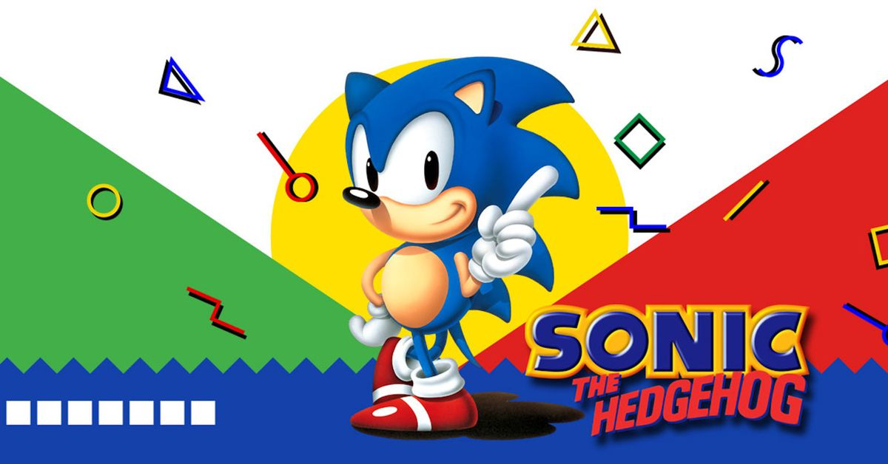

Ilustrações



A história dos jogos digitais teve início quando os acadêmicos começaram a projetar jogos simples, simuladores e programas de inteligência artificial, como parte de suas pesquisas em ciência da computação. Somente a partir das décadas de 1970 e 1980 é que os jogos eletrônicos se tornaram populares, quando jogos de arcade, console de jogos eletrônicos e jogos de computador foram introduzidos ao público em geral. Desde então, os jogos eletrônicos tornaram-se uma forma popular de entretenimento e uma parte da cultura moderna em diversas regiões do mundo.
Em 1993, um jogo saiu da órbita terrestre pela primeira vez. Esse jogo foi o Tetris do Nintendo Game Boy, que estava bastante popular na época e foi levado pelo cosmonauta russo Aleksandr A. Serebrov a bordo de uma Soyuz TM-17 para a Estação Espacial MIR. A viagem durou 196 dias e 17 horas e o game orbitou a Terra mais de três mil vezes. Em 2011, o cartucho viajante foi vendido em um leilão por US$ 1.220.
Um fato divertido é que a Lara Croft, a arqueóloga mais famosa dos videogames, quase teve um nome bem diferente. Quando os primeiros conceitos de Tomb Raider foram elaborados, o plano do animador da Core Design responsável pelo título era desenvolver uma história interativa em que um personagem masculino, nos moldes de Indiana Jones, iria até as pirâmides do Egito para procurar tesouros. No entanto, para se diferenciar do personagem dos cinemas, a equipe decidiu transformar o personagem masculino em uma mulher sul-americana chamada Laura Cruz. Posteriormente, o nome latino foi considerado muito difícil de pronunciar entre os falantes do idioma inglês. Então, Laura virou Lara e, após consultar um catálogo telefônico, eles encontraram o sobrenome Croft, que substituiu o Cruz.
Outra informação para esta lista de fatos divertidos e curiosos é que, durante a eleição presidencial de 2008, o então candidato Barack Obama decidiu usar os jogos como veículo de sua campanha. Ele comprou espaços de propaganda em 18 títulos para exibir o seu slogan “Vote for Change”. Os anúncios foram exibidos em 10 estados americanos em jogos mais focados no público adulto como Burnout Paradise, Skate, Madden e NASCAR.
Sonic The Hedgehog: Sonic the Hedgehog é um ouriço azul nascido em Green Hill, na South Island. Lá ele vive e tem muitos amigos. Desde pequeno sempre foi famoso por ser um pouco diferente: ser o mais veloz dos animais da floresta! O Sonic vive num mundo cheio de animais, e sustentado pelo poder de pedras especiais, as Chaos Emerald.
Mario: O herói foi criado por Shigeru Miyamoto para ser o principal inimigo de Donkey Kong, no fliperama de mesmo nome. Mario, chamado na época de “Jump Man”, tinha a missão de resgatar a princesa das garras do macacão. O jogo era bem simples e funciona como um tipo de plataforma único.
Donkey Kong: Donkey Kong é um personagem dos videogames criado em 1981, por Shigeru Miyamoto. O macaco mais famoso da Nintendo foi idealizado juntamente com outro fenômeno dos videogames, Mario. No primeiro jogo da série, o encanador de bigodes, que até então se chamava Jumpman, tinha que salvar a princesa do terrível Donkey Kong.
Tetris: O jogo Tetris nasceu na antiga URSS, em junho de 1984, e foi desenvolvido pelo cientista russo Alexey Pajitnov no Centro de Computação da Academia Russa de Ciências (Russian Academy of Sciences). Em plena Guerra Fria, Pajitnov se inspirou em um jogo de tabuleiro de origem grega, chamado Pentominoes, para criar o game
@psycho_x77
@x_x77_x